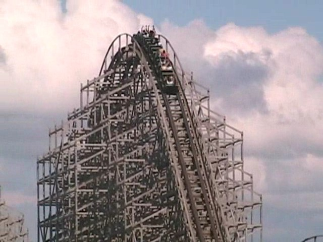
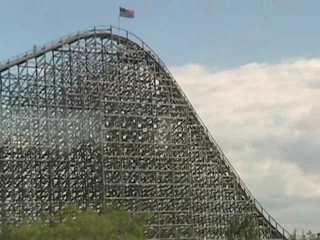
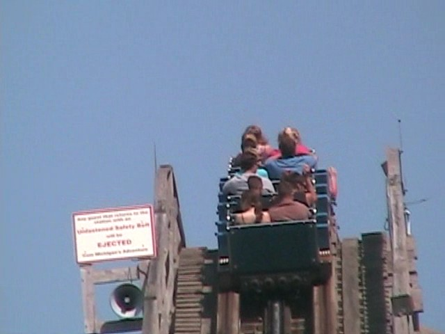
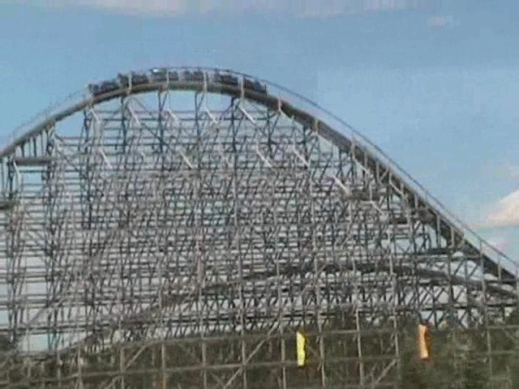
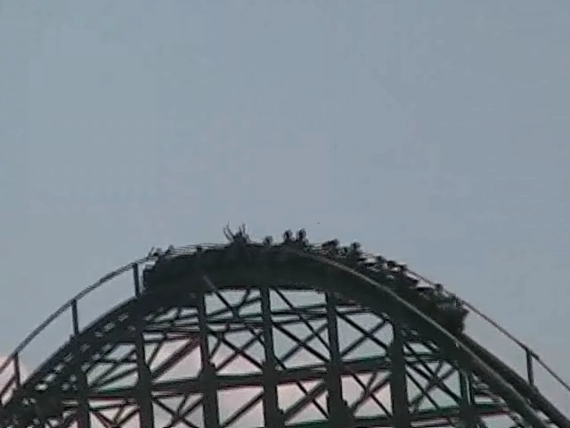

| |
Shivering Timbers Review

Today, we'll be heading over to Michigan's Adventure where we'll be reviewing Shivering Timbers. After hopping in the seat and pulling down the lap bar, away we go!!! Around the turn we go and then we start to climb up the lifthill. You notice that it's quite a big lifthill, which makes for a long climb. During your long climb, there's not much to look at. To your left, you can basically get a birds eye view of Michigan's Adventure (It's not as great as it sounds). And to your right, you basically just see the ride's ending helix, the parking lot and the vast emptiness of the state of Michigan. Once you finally reach the top, you get a good idea of the layout. Just a bunch of airtime hills. Sweet!! This is going to kick ass!!! Then you go down the first drop. It is awesome. You simply drop to the ground and pick up A LOT of speed. You are going FAST!!! REALLY REALLY FAST!!!!! You then head into the first hill. You fly over the hill. It's really fun and all. But something's not quite right here. There's something missing here, but I just can't put my finger on it. Oh yeah, the airtime is not there. So much for that dream. But hey, it could be worse. I could be stuck on Wild Beast with the Devil while listening to a certain Canadian pre-pubescent sh*thead of a singer whom I refuse to name because I refuse to in a thunderstorm while being stung by a swarm of bees. Anyways, back to Shivering Timbers. After that first airtimeless hill, we head into another giant hill with no airtime hill. And then we get 3 more hills like that. Finally, Shivering Timbers decided to get bored of giant hills, and decides that it's time for some laterals. The good news is that this turn actually has some very good laterals. =) After that, we go through a little straight track before going through some bizzare drop turn thing. And now, we head back home. First bunny hop of the return stretch. Some mild floater air, but nothing crazy. Then we head up into a double up, before dropping back down. And here, we have a rare coaster element known as Trick Track. You know when you were building a rollercoaster in RCT3 and just decided to spice up your straight track by having bank in one direction before banking in the other, that's Trick Track. And to be honest, I'm not that big of a fan of it. But hey, at least it's unique. And it is better than straight track, so that's a good thing. Then after many more bunny hops, we finally head into our ending helix. The helix, while not anywhere close to the helix of death, is actually pretty strong for a ride that's meant to be all about airtime. But then it's straight to the brake run. While Shivering Timbers is clearly a very good wooden coaster, it's not a great coaster and is far from being "THE GREATEST WOODEN COASTER I HAVE EVER RIDDEN IN MY LIFE!!!!!!!". But hey, it's not only a really good woodie, but it's the only coaster here that has any originality to it at all. So yeah, I'd totally recommend riding this if you're ever at Michigan's Adventure.
8/10
Location: Michigan's Adventure
Opened: 1998
Built by: Custom Coasters International
Last Ridden: August 9, 2008
Shivering Timbers Photos





|